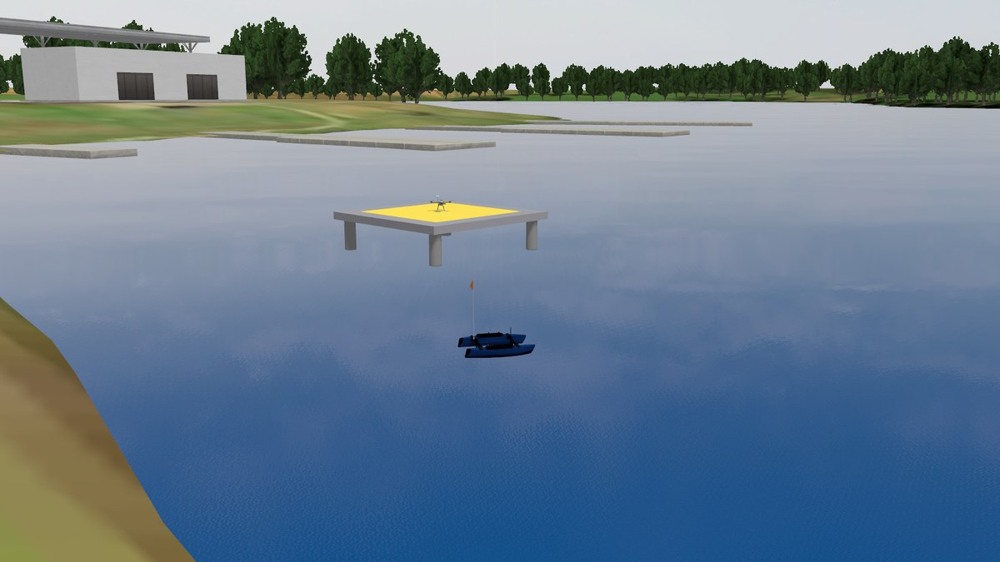

Several vehicles on one ocean
One simulation, three vehicles of three kinds, each one commanded on its own. This walkthrough runs the multi vehicle demo on the Sydney Regatta lake and shows what to look at: the ROS graph of each vehicle under its name, a sensor and an actuator of one vehicle, a gamepad bound to one vehicle, and a second copy of a vehicle joining the others.

The demo at Sydney Regatta: the BlueBoat off the start point, the BlueROV2 under the surface ahead of it, the X500 on the landing pad.
You need bluerobotics_models and holybro_models built in the workspace, and every terminal sourced. The Sydney terrain downloads from Fuel the first time it loads, about 140 MB.
1. Bring it up
ros2 launch kai_bringup multi_vehicle_demo.launch.py
Gazebo opens on the lake. The launch is nothing more than the simulation
launch followed by the spawn launch three times, one per vehicle, each
through the vehicle’s own generator with a name and a pose: blueboat at
the waterline off the start point, bluerov2 six metres ahead and one
metre under, x500 on the landing pad. Nothing in it is specific to these
three: any vehicle joins the same way
(Spawn and drive). world:=open_water.sdf runs the
same demo around the origin of the open water world; the demo knows where
to put its vehicles in those two worlds.
2. One name each
Every instance goes by one name, which is its Gazebo model name, its topic prefix, its ROS namespace and its TF prefix. That is what keeps three vehicles apart. See it in the graph:
ros2 node list
/blueboat/robot_state_publisher
/blueboat/ros_gz_bridge
/bluerov2/robot_state_publisher
/bluerov2/ros_gz_bridge
/gz_server
/ros_gz_bridge
/ros_gz_container
/x500/robot_state_publisher
/x500/ros_gz_bridge
Each vehicle has its own bridge and state publisher in its namespace. The
bridge at the root is the simulation launch’s, and it carries /clock
alone; the vehicles’ bridges drop their clock entries, so the clock has one
publisher:
ros2 topic info /clock
The topics follow the same rule:
ros2 topic list | grep '^/x500/'
/x500/air_pressure
/x500/command/motor_speed
/x500/gps/fix
/x500/imu
/x500/joint_states
/x500/mag
/x500/robot_description
The boat has /blueboat/motor_port/cmd, /blueboat/motor_stbd/cmd,
/blueboat/ping/range and its joint states; the ROV its six
/bluerov2/thruster_N/cmd and its camera. Sensor topics are bridged
lazily, so a sensor shows up in the list once something subscribes to it.
The frames carry the name too, in TF and in every message header:
ros2 run tf2_ros tf2_echo blueboat/base_link blueboat/ping_beam
3. Read a sensor
The X500’s barometer, which works because the world runs the air pressure system:
ros2 topic echo --once /x500/air_pressure
The header’s frame_id is x500/base_link: the frame of the instance, not
a bare link name, so two X500s would never share a frame. The boat’s sonar
looks down in blueboat/ping_beam and finds nothing, because the lake’s
mesh has no bottom under the water, so its range reads infinite; the ROV’s
camera looks through the water:
ros2 topic echo --once /blueboat/ping/range
ros2 run rqt_image_view rqt_image_view /bluerov2/camera/image
4. Command an actuator
The boat’s propellers take a fraction of full thrust in [-1, 1] on their command topics. Half ahead on both, one terminal each:
ros2 topic pub -r 5 /blueboat/motor_port/cmd std_msgs/msg/Float64 "{data: 0.5}"
ros2 topic pub -r 5 /blueboat/motor_stbd/cmd std_msgs/msg/Float64 "{data: 0.5}"
The boat moves off along the shore; the ROV and the X500 stay where they
are, because nothing they listen to changed. Stop both publishers, then
send 0.0 the same way to stop the boat. The ROV’s thrusters take the same
command on /bluerov2/thruster_1/cmd and its siblings, and the X500’s
rotors take one speed per rotor:
ros2 topic pub --once /x500/command/motor_speed actuator_msgs/msg/Actuators "{velocity: [700, 700, 700, 700]}"
They spin, and with no flight controller in the loop that is all they do.
5. Drive one with a gamepad
The teleop stack of bluerobotics_models binds to one instance and runs
under its name (Teleoperate with a gamepad).
The demo’s boat is blueboat, which is the stack’s default for that
vehicle:
ros2 launch bluerobotics_teleop teleop.launch.py vehicle:=blueboat
Hold RB and push the right stick. Stop it and bind the same pad to the ROV:
ros2 launch bluerobotics_teleop teleop.launch.py vehicle:=bluerov2
Each stack publishes only under its name, /blueboat/cmd_vel and the two
motor commands, or /bluerov2/cmd_vel and the six thruster commands, so
the pad never reaches the other vehicle.
6. Add a second boat
Two of a kind work the same way as two kinds. While the demo runs, spawn another BlueBoat beside the first under a new name:
ros2 launch kai_bringup spawn_vehicle.launch.xml name:=boat_b x:=-536 y:=158 yaw:=1 \
generator:="$(ros2 pkg prefix blueboat_gazebo)/lib/blueboat_gazebo/configure_vehicle.py --config $(ros2 pkg prefix --share blueboat_description)/config/blueboat.yaml"
It gets /boat_b/... topics, /boat_b/ros_gz_bridge, boat_b/ frames.
Drive it with the pad, bound by name:
ros2 launch bluerobotics_teleop teleop.launch.py vehicle:=blueboat name:=boat_b
The first boat sits still. A third boat is the same two commands with another name.
7. Change the sea
The lake is a rowing course, so keep the sea state between 0 and 2 (Sail the competition sites):
gz service -s /world/default/wave/set_parameters --reqtype gz.msgs.Param \
--reptype gz.msgs.Boolean --timeout 2000 \
--req 'params {key: "sea_state" value {type: INT32 int_value: 2}}'
What to know
The demo is also a test.
kai_bringup’s end to end test runs it headless on the open water world and checks where each vehicle sits, the namespaced nodes and topics, the single clock publisher, the TF prefixes, and that a command on the boat moves the boat alone.Waves are drawn, not felt. The vehicles float on the flat water level; the moving surface does not lift them yet (Waves and physics today).
The X500 does not fly. It has no flight controller here; its rotors spin on command and it stays on the pad. Autopilots are a separate topic.
Composition must match. The spawn launch loads its nodes into the simulation launch’s container. Run both with the same
use_composition, or a spawn waits for a container that never comes.Several simulations side by side need their own
GZ_PARTITIONandROS_DOMAIN_IDeach; several vehicles in one simulation need none of that.